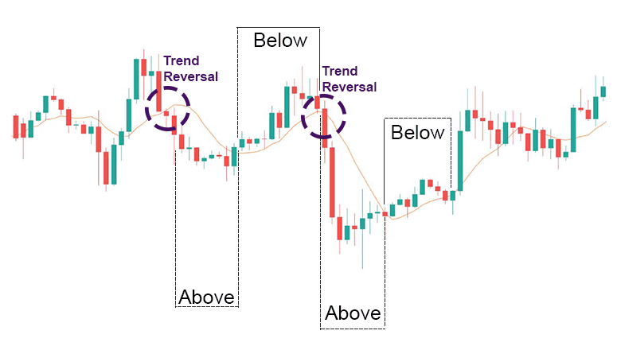
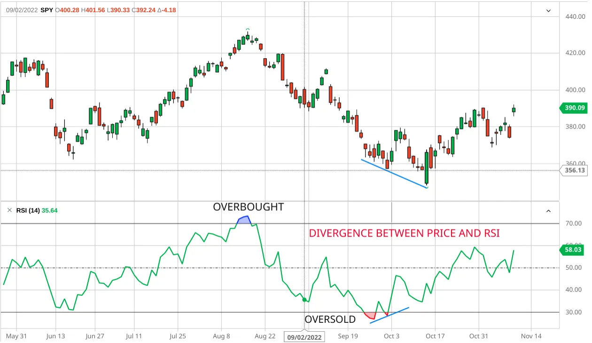

What is Trend Following?
Trend Following is one of the most popular trading strategies used by professional traders worldwide. It helps you capture significant market moves by identifying and following the prevailing market direction.
🔹 Key Components of Trend Following
1️⃣ Market Structure & Moving Averages
Analyze the market structure to determine if the trend is bullish or bearish. Use moving averages (like 50 MA, 200 MA) to confirm the trend direction.
2️⃣ Traditional Chart Patterns
Recognize patterns like Head & Shoulders, Triangles, Double Tops/Bottoms to anticipate continuation or reversal signals.

3️⃣ RSI Indicator (Relative Strength Index)
The RSI helps identify overbought or oversold conditions in the market. Generally, values above 70 suggest overbought and below 30 suggest oversold.
💡 Why Trend Following Works
Markets tend to move in trends rather than random fluctuations. By identifying and following the trend, you can align with the market momentum and avoid trading against the major force.
📞 Get Personalized Trend Following Guidance